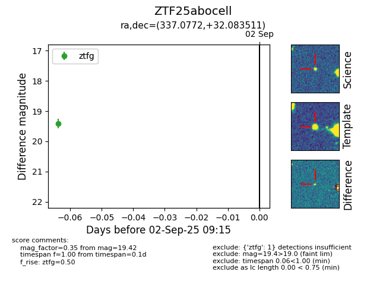

FINK: ZTF25abocell
Lasair: ZTF25abocell
ALeRCE: ZTF25abocell
ZTF25abocell (ztf,fink)
equatorial (ra, dec) = (337.0772,+32.08351)
galactic (l, b) = (90.7137,-21.68680)

last ztfg=19.42
1 ztfg detections